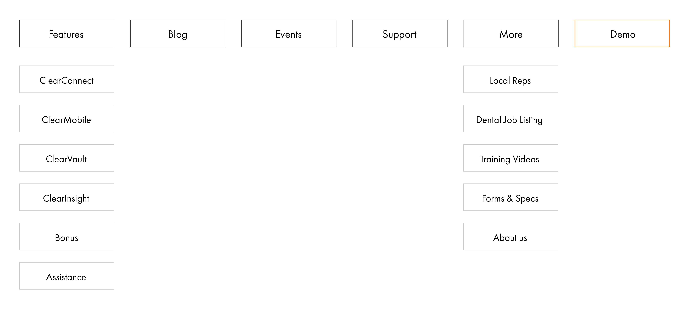

ClearDent Case Study
Project Summary
I worked with ClearDent, a dental practice management software company, to completely overhaul the company's website as the design lead of the project. The project was main focused on implementing new branding, usability improvement, and CMS migration.
Our Main Goals:
- Convey the brand message better
- Improved site usability
- Increased web conversion
- Updated visuals messaging
Team Members
- Chief Revenue Officer
- Senior Marketing Specialist
- Outsourced Marketing Consultant
- Design Lead (UI/UX Design & Web Development)
Timeline
September - December 2018 (12 weeks)
Problems & Challenges
- Misalignment between content and the branding
- Prominent user-flow/usability issues
- Misaligned and outdated design elements
Goal
Design a website communicates the values of the company and its product with an user-centric approach
Eearly Insights from users: Need for Restructuring the Information Architecture

Previous website's navigation
Show me the solutons you offer!
The navigation was mainly focused on showing the line of products while not providing enough information on what 'solutions' can be offered to the specific needs of the users. As a software 'solutions' provider, this key information were missing to inform the buyers' decision.
Okay, so what does your product do?
The naming convention for the products were confusing majority of the new website visitors. While the website was displaying the actual product names, it was not conveying information on what product offers.
Content
With the company's new content-driven marketing strategy, the website needed to equip a robust resource library which can cater blogs and gated-contents such as eBooks and whitepapers.
Reprioritizing the information hirerchy: New navigation structure
Before
After
Refining the visuals: Updating the look
Typefaces

Futura PT for heading, Nunito for Body type; The classic font Futura was chosen for the typeface to communicate the boldness
Colors

Since the visual branding was not changing, and the management only preferred the incremental changes, I have saturated the original blend of primary and secondary color, Blue and Orange for its visibility and liveliness.
Design Guidelines

The design system was created for the internal use for both Marketing and R&D team's use, and the system was being actively used for the new web app development which I was lucky to be a small part of in their deisgn initiative.
Implementation
The Implementation process consisted of multiple iterations which required weekly brainstorming sessions and feedback from all team members and stakeholders. [Show diagrams of: Ideation -> design -> prototype -> implementation]
[Few pictures of wireframes, paper prototype, excel sheets, Adobe XD]
Takeaways for this project
Since it was my first project experience as a 'design lead', It was not an easy tasks to manage the timeline of the projects since there were quite a lot of dependencies on the copywriting side of the project. It looks like I could possibly gain more insights from industry mentors on how they usually manage a such project. Due to the tight project timeline, and the nature of my role taking two duties as a designer and a developer, a proper high-fieldity prototyping was not in place everytime. And the timeline might have been overly ambitious. If I were to do lead the project, I would